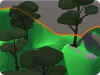
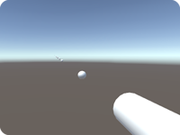
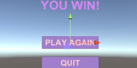

UNITY - Introduction to 3D Games
UNITY - Introduction to 3D Games
This tutorial covers introductory topics on starting in Unity, 3D games, and Scripting.
|
|||||
 PART A: UNITY INTERFACE PART A: UNITY INTERFACE
| |
| (1) PROJECT panel (bottom): Where all assets are stored. Shows the actual Project folders, auto-updates if anything is put into or taken out of folders outside or inside Unity. Only change contents of Assets folder. Make subfolders: prefabs, scripts, etc. (2) HIERARCHY panel (far left): Contents of current scene. Organize by parenting similar objects under a named Empty GO, like putting all tree objects under an Empty G.O. called “foliage”. (3) SCENE View (center): View and Transform all assets in the game from any desired angle. Pan = [Alt]+M-Mouse, Zoom = [Alt]+R-Mouse. move = [w], rotate = [e], scale = [r] (4) GAME View: See through camera. Multiple cameras can split screen by percentages. Hit Play to play game. NOTE: changes to assets during Play mode are reset when play is turned off (not saved). (5) INSPECTOR panel (far right): Shows all Components and parameters for G.O. selected in the Hierarchy (in Scene) or Project (Assest or Prefabs). Context gears/dots: Click gears or other context buttons to change parameters (like shapes or material Shaders) or add assets, like texture PNGs. (6) MENU: easy access to all parts of Unity. In particular, note: |
(7) CONSOLE panel: Check script errors.
(8) Asset Store view: For downloading or uploading packages (note: for this course, all art and audio assets are expected to be made by your team). SCRIPTING NOTES: |
|
PART B: MAJOR UNITY CONCEPTS / TERMS
|
|
| GAME OBJECT: The base of a thing in Unity. Just about everything in the game starts as an empty G.O., to which we add components to build it into an interactive asset.
COMPONENT: everything we add to Game Objects to make them function as desired, including renderer, materials, particles, audio, physics, and custom scripts. Components can most easily be added to G.O.s and have their settings adjusted in the Inspector, with the G.O. selected. SCENE: a game “level”. A game can have many Scenes, each sharing or with their own G.O.s, Controllers, and Prefabs. File > New Scene for a new level or menu in the game, File > New Project to start an entirely new game. PREFAB: A container for a complete asset (collection of G.O., Components, settings) used repeatedly. Create by dragging an asset from Hierarchy to Project. Asset in Hierarchy turns blue, and each copy made from then on is an “instance” of the Prefab in the project. Prefabs can be Instantiated by code in a script (bullets, etc.). Can be exported in a Package to be used by others (like teammates). PACKAGE: Unity scenes do not merge well. Therefore, only one person can "own" (modify) the Unity Scene at a time, and collaborators must work in temporary Scenes and then Package up the content they want to send to the Scene Owner for integration into the actual scene. The steps: (1) Create an Empty GameObject in the Hierarchy. (2) Parent all Hierarchy elements to be packaged under that Empty GO. (3) Name the Empty GO usefully. (4) Drag the Empty GO parent to the Project to make a Prefab of the entire group. (5) Rightclick to Export Package, and share with team 2D vs 3D: a 3D Unity game works with perspective and a 2D game uses flat parallax planes. Each must use their own physics prefabs, for example “RigidBody” for 3D and “2DrigidBody” for 2D. Set the initial game system to 2D or 3D on project creation. |
PHYSICS: in Unity there are a number of Physics and Physics2D Components to manage physical interactions. Colliders (capsule, mesh, or box) manage object interactions and can be set for physics interactions (bouncing) or to trigger other effects (like activating a script if set to isTrigger). RigidBody enables the built-in physics engine, is applied to any object with actively interacting colliders (any object with a collider that is not the ground), and contains gravity which can be turned off for flying/space games. Physic Materials can be added to colliders to control friction and bounciness. CONTROLLER: a component meant to manage a major game part. We write a custom GameController for a Scene and add AnimationController to animated assets to manage interaction of that asset’s animations with its scripts. GUITEXT are empty G.O. with GUIText components applied. They are differently visible in Game view (overlays game) and Scene (HUGE). Uses pixels in viewport space. Position by default is relative to: lowerLeft 0/0/0, upperLeft 1/0/0, upperRight 1/1/0, lowerRight 0/1/0. TAGS are identifiers which can be added to a GameObject in the Inspector for scripts to exclude or include from an effect, or to find a unique tagged G.O., like the Player or GameController (or a custom tag). LAYERS are for identifying groups of objects, and are accessed by Layer # (int) rather than Tag name (string). AUDIO in Unity comes in 3 main forms: |
|
PART 1: SET-UP
a). Create a new 3D Project in Unity:  Open the Unity Hub. Hit [New]. In the window that opens, choose 3D, set the name and location (all names for projects and assets should avoid spaces or special characters. Use HumpCap notation). Hit [Create] and wait for the project to build into the location you set. Open the Unity Hub. Hit [New]. In the window that opens, choose 3D, set the name and location (all names for projects and assets should avoid spaces or special characters. Use HumpCap notation). Hit [Create] and wait for the project to build into the location you set.b) Download the following assets and add them to the Project Panel > Assets folder: This First Person Controller (RightClick in Assets folder to Import Package).
These 3 Sound FX files (open .ZIP, drag MP3s to desktop, then into Assest folder).
|
|  3D TERRAIN: Want to try a more natural-looking environment? Try this short tutorial on using the Unity Terrain system for sculpting landscape, texturing the surface, adding foliage. |
|
PART 3: INTRO TO SCRIPTING AND AUDIO FOR 3D
See these Scripting Notes, above. 1. Create a game Pickup: a). Create a third GameObject > 3D Object > Cube. In the Inspector name it "SpinCube" b). Add a Material to change the color: In Project panel Assets folder, RightClick to create a folder called "Materials".
Inside the folder RightClick to make a material, name it "SpinCube_m".
In the Inspector, set the Albedo rectangle to a bright color. Drag the Material onto SpinCube in the Hierarchy to see the color on the cube in Scene. c). Add Physics: Select the Spincube. In Inspector, Add Component > Physics > RigidBody.
Under RigidBody Turn off "Use Gravity".
Find the default Box Collider component on Spincube, turn on “IsTrigger”.
2. Create a new C# Script: a) In Project panel Assets folder: RightClick to Create > C# Script, name it “Rotator,” hit [Enter] to commit the name (adds the name to both the file and the Class). b) Double-click the script in the Project to open it in your editor. c) “void Start ()” and “void Update ()” are default functions. Delete Start(), rename Update be sure class name is Rotator, add 1 line to Update() (see below). d) Save the script [Ctrl / Cmd] + [s]. Click back to Unity and wait as the script loads.
e). Drag the script onto SpinCube in Hierarchy. Hit Play to see rotation. Turn off Play. OPTIONAL: How does the rotation change if you change the Update fuction to FixedUpdate instead (which limits the rotation to 50fps)? f). Drag the SpinCube into the Project Assets folder to create a Prefab (an instance). g). Select SpinCube in Hierarchy, hit [Ctrl/Cmd]+[d] to duplicate for 3 cubes, move in the Scene. 3. Add Player Interaction: Make Cube Disappear a). Drag the FPSController prefab from the Assets folder into the Hierarchy. By default, the FPS Character appears at location 0,0,0 in the Scene. This is too low: the collider is embedded halfway into the ground, so if you hit Play the FPS character will fall. In the Scene view hit [m] for the Move tool and click and drag the green "Up" arrow to raise the FPS character a bit above the ground. NOTE: The provided FPS controller automatically locks and hides the mouse cursor.
This is easy to fix:
b). With the FPSController selected, [Add Component] Physics > Capsule Collider.
d). Hit Play to test: use [WASD] to approach the Spincube. When the player touches the it, the Spincube should disappear (if it does not, make sure the tag "Player" was set on the FPSController). Turn off Play to reset the Scene. CURSOR NOTE: If you want the Cursor to not disappear when using the FPS controller, select the FPS object and in the Inspector turn OFF: First Person Controller > Mouse Look > Lock Cursor. COLLISION NOTE: The FPS Controller may not work with OnCollisionEnter; it only works reliably with OnTriggerEnter. To add a damage script to an object meant to hurt the Player (like hitting a rock), add two colliders: a smaller one for blocking collisions and a slightly larger one for Trigger collisions. 4. Player Interaction: Cube Makes a Sound a). Drag each sound effect file from the Assets folder onto a SpinCube in the Hierarchy (one each). This automatically adds an "Audio Source" component to the Objects. In the Inspector, turn off "Play on Awake" in each Audio Source. b). Change the OnTriggerEnter code to comment-out the SetActive(false) line (type // at the start of that line) and add a new command to play the AudioSource component:
Hit Play and move the Player to collide with each Cube to make all 3 sounds. FIX DOUBLING: Is the audio playing twice, and the score (see later notes) registering two hits per cube? The reason is the FPS controller has a Collider in its Prefab in addition to the Capsule Collider we added, and both can hit the Cube Collider! A solutuon is to turn off the Cube Collider after it registers first Player impact: Add the bold-faced line to OnTriggerEnter above GetComponent<AudioSource>().Play():
| ||||||
|
PART 5: ADDFORCE: As we saw with AudioSource, Unity variables can hold references to other Components of the Scripted-Object. Here is another example: a). Create a third GameObject > 3D Object > Cube. b). In the Inspector name it "ZoomCube." c). [Add Component] > Physics > Rigidbody to it. Turn off "Use Gravity". d). Create a new C# script called "Zoooom" and apply to the Cube. e). Open the script in your editor, add this code, Save and Play to watch the motion:
We can also make an object move from its current location to a target location using LERP (Linear Interpolation). Look through this excellent LERP Tutorial | ||
|  SHOOTING PROJECTILES: Want to shoot objects in the environment? Go here to add projectile shooting to your Standard Assets FPS Controller. |
|
PART 6: PLAYER FEEDBACK WITH VISUAL FX AND SOUND FX
COLLISION EFFECTS: There are many ways to emphasize an impact or action and let the player know something happened. Here are three ways to communicate information to the player in-game: change the object color, play a sound, create a particle effect. Each script pays attention to the "magnitude" of the impact velocity (how much force is involved), so that initial / big impacts generate results but final / smaller bounces do not. a). Create a new GameObject > 3D > Cube, name it "FunCube". [Add Component] Physics > Rigidbody. Hit [w] to move the cube up so it falls a distance to the Ground when we Play.b). At the top-right of the Inspector create a new Layer called "stuff": Click the word "default" next to Layer
Choose "Add Layer"
(bottom of the list) In the list provided, choose an empty slot (I recommend Layer 8) Type the new Layer name "stuff". Now, set the Ground Cube and FunCube to this new layer!
NOTE: Tags are for single objects, Layers are for categories of objects. When a new Layer is created, it is not auto-assigned to the selected object. The object needs to be reselected and the Layer assigned. c). RightClick the Project panel Assets folder to create a Physic Material. Inspector: Set bounciness to 2 and both frictions to 0.2. Drag the Physic Material into the FunCube Collider slot.d). ADD VFX #1: Color Changes Create the script FunCubeColor.cs and add it to FunCube.
Playtest!This script has:
e). ADD SFX: Sound Changes: Download this sound file (piano middle C). Drag the sound file into the Assets folder to add it to the Project. Drag the file onto FunCube in the Hierarchy to add it as an AudioSource component. Select FunCube, and in the Inspector: Turn off Play on Awake, set Volume = 0.5. Create the script FunCubeSound.cs and add it to FunCube. Playtest!This script has:
3. Make a Prefab: Drag the Particle Effect to the Project panel to make a Prefab. Delete the Particle Effect from the Hierarchy.4. Create a script for the Funcube to use this Particle System: Create the script FunCubeParticles.cs and add it to FunCube. Add the Particle Prefab
to the script slot. Playtest! This script has:
5. Add Efficiency: The above script does not remove the Particle Systems (PS) after they have completed, so you will still see the "shuriken" icon in the Scene view during Play mode. This is not performant (can cause slow-down in a game). To remove them, make these changes to the script:#1 Create a GameObject variable to hold the current instantiated PS. #2 Set the Instantiate line to fill this GO variable. #3 Call a Co-routine (IEnumerator) to remove the current PS. #4 In the IEnumerator, set a delay long enough for the PS to finish, then destroy it.
g). Increase Gravity for faster falls / more VFX: Open Edit > Project Settings > Physics to increase gravity from the default 9.8 meters per second. Try setting it to a much higher number, like 50. |


|
PART 7: UI AND SCORING: Another way to give players feedback on their progress is through HUD displays. To show a score we need two new things: A Game Object containing a public Control script for managing the scorekeeping, and a UI Text Object to display the score (on a Canvas). A). Create an Empty G.O.: GameObject > CreateEmpty, name "GameControlObj". In the Inspector apply the tag GameController. Create a new C# script named GameController.cs. Drag this script onto GameControlObj. Doubleclick the script to open in your editor. IMPORTANT: Be sure to add the UI namespace to the top!:
B). Create a Canvas Text object, add it to the GameControllerObj script: GameObject menu> UI > Legacy > Text
to make a Text Object inside a Canvas Object. (NOTE: The Canvas appears normal in the Game view and crazy large in the Scene view). With the Text Object selected, change these settings in the Inspector:
Set Width and Height much larger to increase text field (double or more). Set Pos X and Pos Y to a corner of Game view. Change text field to "Score".
Add the Text object to the GameControllerObj script slot:In the Hierarchy select your GameControlObj. In the Inspector find the GameController script component with the empty, public TextGameObject script slot. Fast-drag the Text object from the Hierarchy into the TextGameObject script slot. C). Finally add 3 parts to the Rotator.cs script so collected objects can update the score: #1. Add a private variable to hold the GameController object. #2. Add a Start method to find the actual GameController object and assign it to the private variable (first assign to a temporary GameObjectTemp variable). #3. Add a line to the OnTriggerEnter function to run the AddScore function inside of GameController's script:
|
|
PART 8: ADDING DEBUG.LOG Not sure why a certain behavior is occurring? Add a “return” to the debug log! For example, to the updated Rotator.cs script, in the OnTriggerEnter function, you can add this to see how many times the collider is activated:
Hit Play and open the Console Panel (next to the Project Panel ) to view the log. | ||
|
PART 9: SWITCH BETWEEN LEVELS:
Let's say we want to go to a new level when this level is complete. a). If you have not already done, so, drag the GameController object from the Hierarchy into the Assets folder to make it a Prefab. b). Save this Game Scene, name it "GameScene". c). Open and revise GameController.cs script: Please add: an Update() function to allow [Esc]-quitting the game
a new Namespace at the top for UnityEngine.SceneManagement
a class variable int for scoreWin to define the win state content to the AddScore() function for the win state
new functions for Update(), PlayAgain() and QuitGame() a new class bool "isEnd" and a condition to the Start() function to make the Cursor visible and functional in End Scenes (needed after the First Person Controller disables it in the Game Scene).
NOTE the options for using the Scene index, the Scene name, or just restarting the same level. To delay the switch to the next level, optionally add another Co-routine (IEnumerator) with a delay. d) In the GameScene select the GameController to set the "isEnd" bool = off / false, so the cursor will remain under the control of the First Person Controller (and in the next section the countdown timer will end the game). e). File > Create a new Scene. File > Save the Scene into the Scenes folder and name it "EndWin".
Drag the GameController Prefab from the Project panel into the Hirarchy to add it to this Scene.f). Add a new GameObject > UI > Legacy > Text. Select the new Canvas created in the Hierarchy, and see the Inspector.
Set the Canvas Scaler > UI Screen Mode = Scale with Screen Size
Set the Reference Resolution Size: X = 1280 and Y = 720Select the Text object: In the Inpector name it "textWin".
Set the Rect Size big (800 x 100).
Set the Font Size big (70, bold), align = center, set the color bright.
Change the text field to "You Win!!"
In Scene view hit [m] to move textWin to Canvas center and middle-top. g). Add a new GameObject > UI > Button. In the Inpector name it "Button_PlayAgain".
Set size = 300 x 80 and set desired colors for Normal and Highlighted. Open the twirly to select the Button's child Text object.
Set font size = 50, bold, and the color high-contrast against the button.
Change the text to "PLAY AGAIN"
 Add Functionality: Re-select the Button.At the bottom of the Inspector, find "OnClick()" and hit the [+] to add an event. Drag the GameController object from the Hierarchy (NOT the Assets folder) into the "None" slot (beneath "Runtime Only"). Then click "No Function" (on the right) and choose GameController > PlayAgain(). h). Duplicate the Button, drag it lower in the Canvas. In the Inpector rename it "Button_QUIT". Open the twirly and select the Text object to change the field to say "QUIT GAME". Re-select Button, under OnClick change "PlayAgain()" to GameController > QuitGame().i). Save the Scene as "EndWin". Make a duplicate of the Scene: File > Save As, name it "EndLose". Change the Text in End Lose from "You Win!" To "You lost".j). Open to File > Build Settings. We need to add the Scenes: Open the Project panel > Assets > Scenes folder.
Select Level1 and drag it into the Build Settings top window.
Because it was dragged first, it gets assigned index 0.
Next, drag in the Level2 Scene (it becomes index 1). | ||
|
PART 10: MAKE A TIMER: Finally, ADD STAKES to your game by creating a time limit. A countdown timer can go to a second Scene with a "lose" message in the Canvas Text. a). Create the Timer Display: Select the existing Canvas in the Hierarchy.
RightClick to add a new UI > Legacy > Text. In the Inspector name it "TimerText".
Set PosX and PosY to the opposite corner from the Score text.
Set Width and Height a bit bigger.
Add default text to the Text Field: "TIME: 00"b). Revise the GameController.cs script to include: Three new variables:
a float called "theTimer" a Text object to reference called "TimerText" a float called "startTime" A line in the Start() function to set the initial time, in seconds. A FixedUpdate() function to decrement the time based on
Time.fixedDeltaTime.
Two variables at the top of the Class, with the other Class variables
One new line in the Start() function:
A FixedUpdate() function, after Update():
Revise PlayAgain() to include a timer reset:
Here is the full revised GameController script:
NOTE: FixedUpdate() vs Update(): | ||||||
|
PART 11: BUILD THE GAME: [1] To create a web build to upload to itch.io, please follow the directions here, on the right. [2] To create a standalone build: a). Open File > Build Settings. b). Hit [Build], create a new folder named "Build" outside of your Unity project folder. c). Hit [Select Folder] to build game. On Mac this makes a single .APP. On PC this makes multiple files and folder, all needed (when submitting, compress in a .ZIP). d). DoubleClick the application in the Build folder to run the game. e). Our Update() function in the GameController script lets us hit [Esc] to exit. |
|
The instructional content of this page is © 2015-2023 Jason Wiser. See more Unity tutorials at http://www.Madwomb.com/Unity |